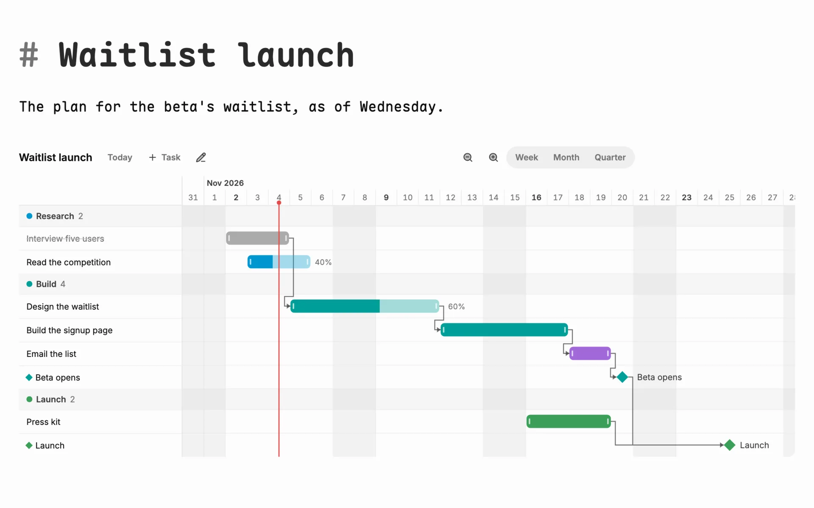
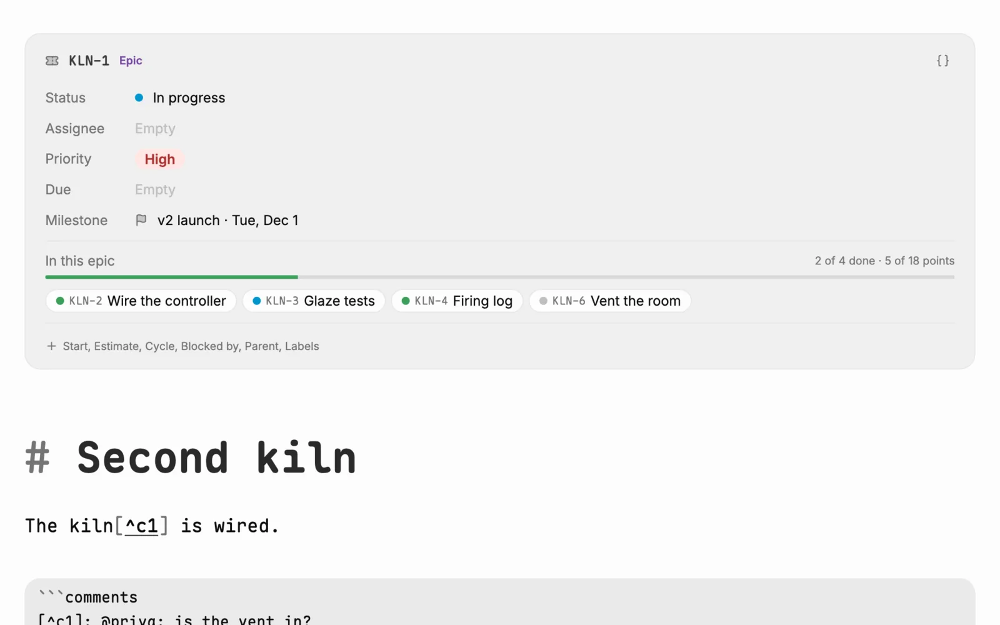
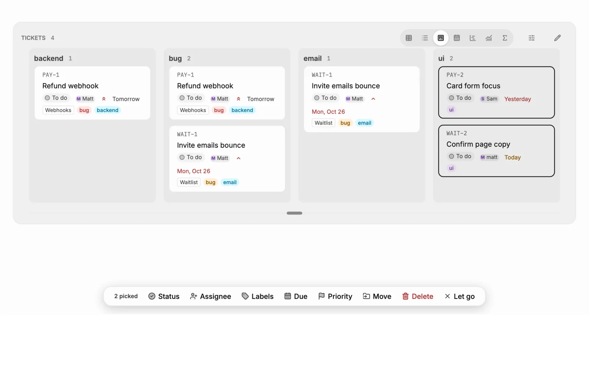
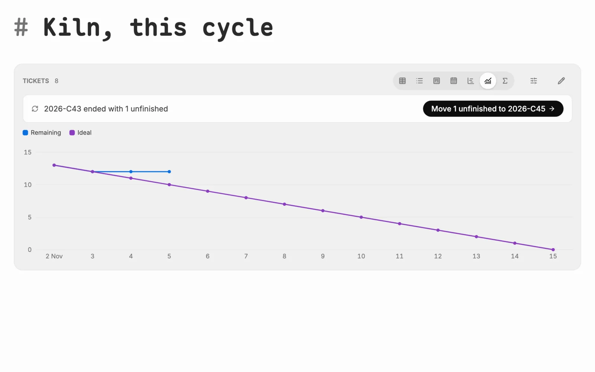
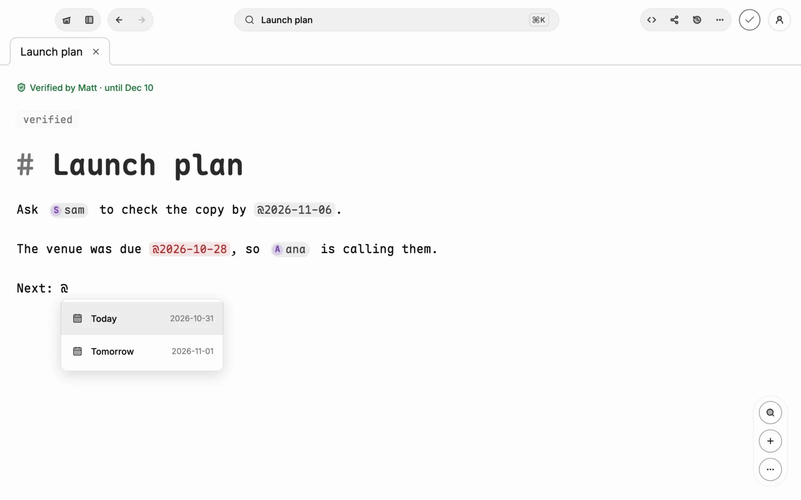

Everything in plain Markdown.
Notes, journals, boards, canvases, notebooks and a team's tickets, as files you own, sealed when they sync. Claude, your calendar, Notion, GitHub and Slack are a switch away.
-
Claude, built in and connected.
Ask in the app with your own key and watch Claude write into your notes, word by word at its own caret. Or add Ghost.md as a connector and claude.ai, Claude Desktop and Claude Code read, search and write your notes, tickets and comments, shown as online while they work.
https://ghostmarkdown.com/api/mcp -
Watch it type.
Its thinking streams in, with a line for every note it reads or changes. Type anywhere and the following stops.

-
Tickets, cycles and a Gantt, in files the team owns.
Give a notebook a key and its notes become tickets. Boards, a Gantt you can drag, burndowns, epics and a roadmap are drawn from a query, and all of it stays Markdown: front matter and fences, readable in Obsidian or on GitHub.

Tickets
Keys, statuses, assignees, due days, priorities, labels, sub-tickets, templates, forms that land as tickets.

Boards, tables, charts
One query fence, shown as a board, table, list, calendar, chart or rollup. Pick cards and change them all at once.

Cycles and epics
A burndown and velocity, unfinished work carried over, epics that add up their tickets, a roadmap from milestones.

Your calendar, in your notes.
Today's events at the head of home. A to-do with a due day is on Google Calendar seconds later. Any iCal address works too.
```query from: events where: start >= today show: calendar ```
Ghost goes to your meetings.
Invite it to a Meet or Zoom call. It joins, writes the transcript live, and files a summary with the to-dos as to-dos.

Speak a note.
Say it and it arrives as Markdown, its to-dos as to-dos. Record with the phone locked; the device writes the summary.
0words of yours sent anywhere to be heard
-
Files you own.
One folder. Every note a
.mdfile named after its title, versions beside it kept like git, attachments under Library/. Back it up to any git host, or publish it as a site.Library/ ├── .glyph/config.json ├── .trash/ ├── image/ file/ recordings/ └── workspaces/Product/ ├── Launch plan.md ├── Launch plan.versions └── PRD-11 Login loop.md Every version.
Who changed what, when; restore any, and undo the restore.
v2 sam "Date picked" =3 -- [ ] Pick a date +- [x] Pick a date
Sealed.
No account needed. With one, everything is encrypted on the device, end to end. No ads, no analytics.
E2Eon notes, tapes, pictures and a team's key
The Market.
Plugins, themes, fonts and icons, all built in. Adding one is a switch, nothing to download.
NotionSlackGitHubDiscordTodoistThingsLovartElevenLabsWebhooksZoomContacts+ 11Write together.
Organizations with live cursors in each member's colour, @mentions, verified pages, comments in the margin, an audit log. Sealed with a key only members hold.

Themes and fonts.
Dawn, Boreal, Ember, Sakura, Meadow, Tide, Dusk. Inter, Maple Mono, Fira Code, JetBrains Mono, Plex, Atkinson, Lora.
10 themes · 8 fonts · 22 plugins
-
Get Ghost.md
Free, no account needed. Android, iPhone, Mac, Windows and the web.